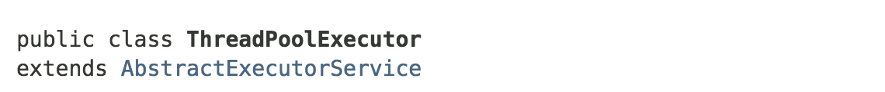
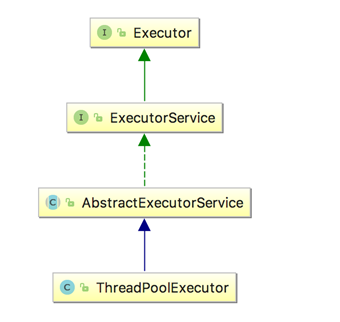
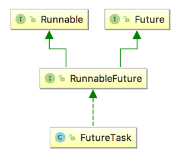
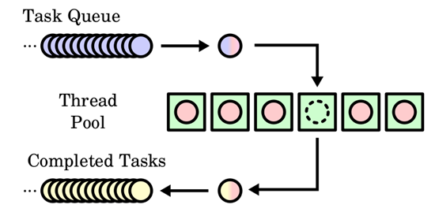
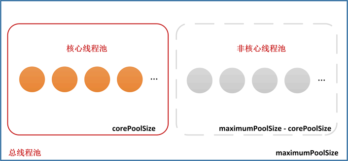
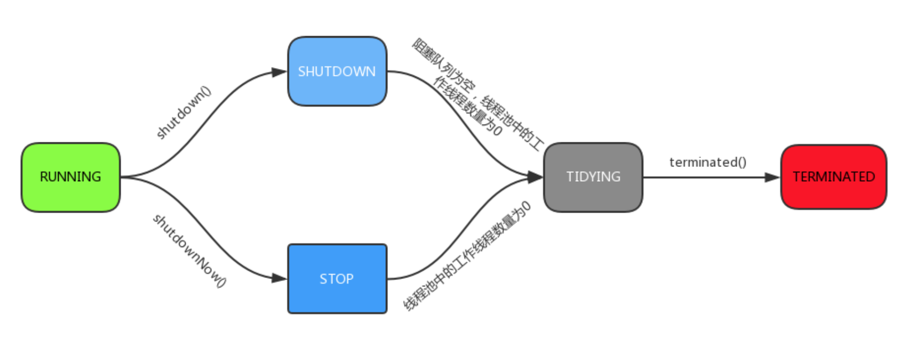
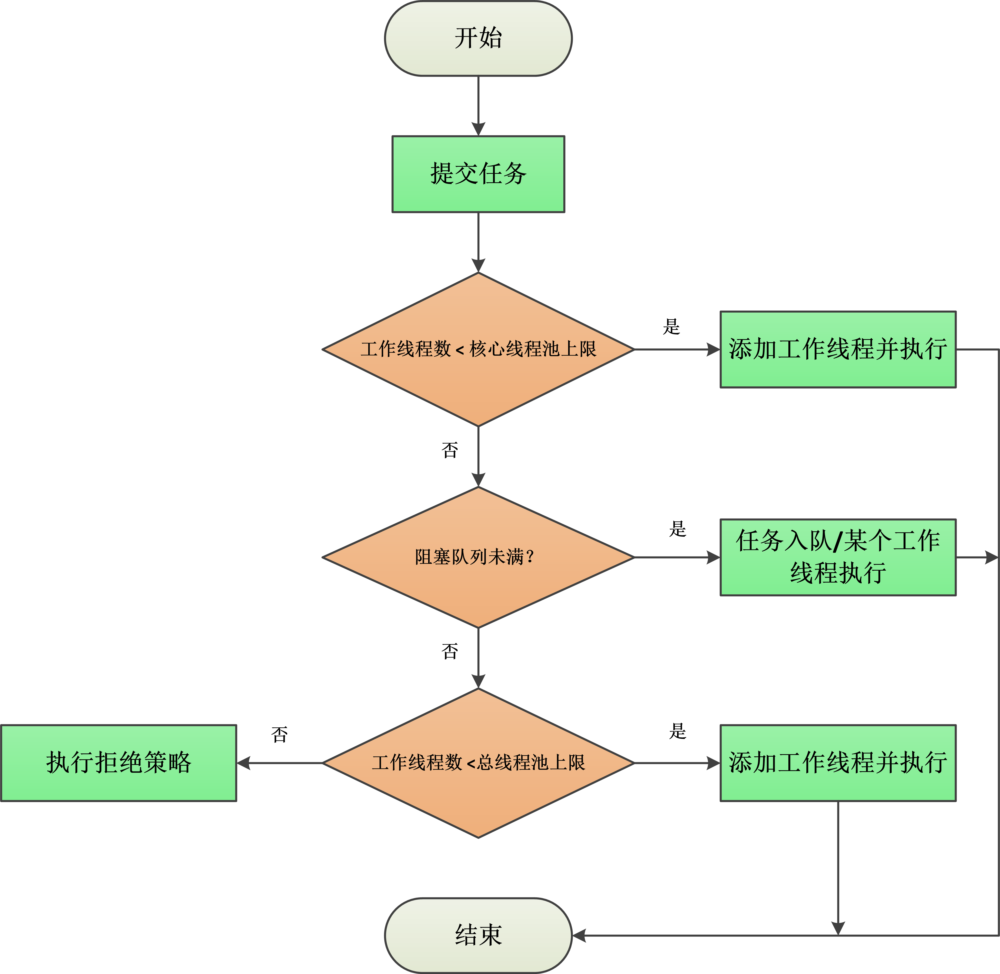
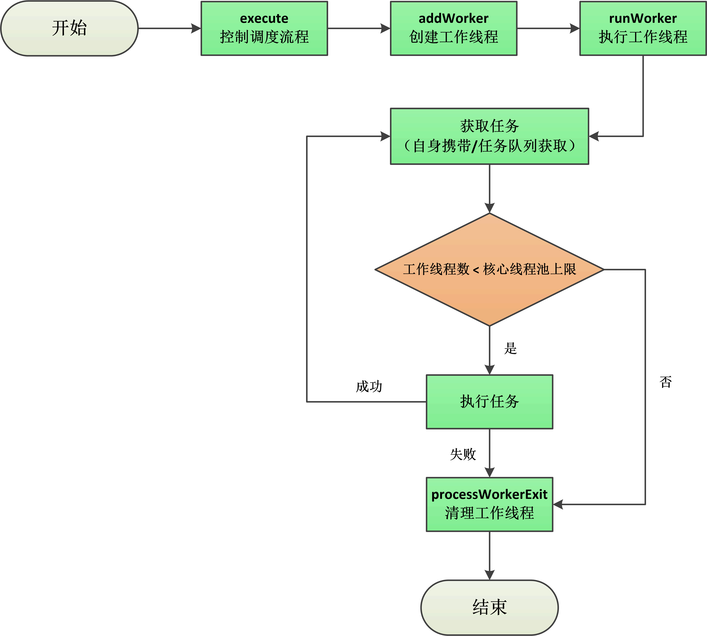
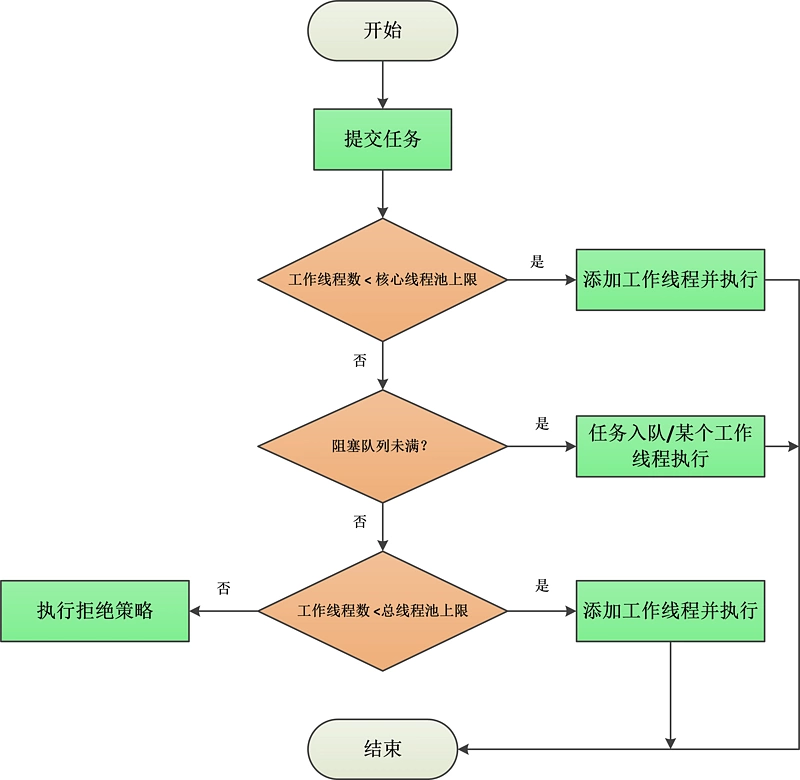
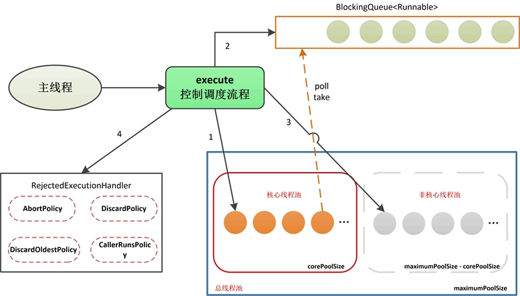

在juc-executors框架概述的章节中，我们已经简要介绍过ThreadPoolExecutor了，通过Executors工厂，用户可以创建自己需要的执行器对象。ThreadPoolExecutor，它是J.U.C在JDK1.5时提供的一种实现了ExecutorService接口的执行器，或者说线程池。

ThreadPoolExecutor并没有自己直接实现ExecutorService接口，因为它只是其中一种Executor的实现而已，所以Doug Lea把一些通用部分封装成一个抽象父类——AbstractExecutorService，供J.U.C中的其它执行器继承。如果读者需要自己实现一个Executor，也可以继承该抽象类。

AbstractExecutorService提供了 ExecutorService 接口的默认实现——主要实现了 submit、invokeAny 、invokeAll这三类方法，如果读者看过上一篇综述文章，就应该知道，ExecutorService的这三类方法几乎都是返回一个Future对象。而Future是一个接口，AbstractExecutorService既然实现了这些方法，必然要实现该Future接口，我们来看下AbstractExecutorService实现的submit方法：
public <T> Future<T> submit(Runnable task, T result) {
if (task == null) throw new NullPointerException();
RunnableFuture<T> ftask = newTaskFor(task, result);
execute(ftask);
return ftask;
}
可以看到，上述方法首先对Runnable和返回值value进行了封装，通过newTaskFor方法，封装成了一个FutureTask对象，然后通过execute方法执行任务，最后返回异步任务对象。
这里其实是模板方法模式的运用，execute是抽象方法，需要由继承AbstractExecutorService的子类来实现。
上述需要注意的是newTaskFor方法，该方法创建了一个Future对象：
protected <T> RunnableFuture<T> newTaskFor(Runnable runnable, T value) {
return new FutureTask<T>(runnable, value);
}
FutureTask其实就是Future接口的实现类：

我们之前讲过，J.U.C中的Future接口是“Future模式”的多线程设计模式的实现，可以让调用方以异步方式获取任务的执行结果。而FutureTask便是这样一类支持异步返回结果的任务，既然是任务就需要实现Runnable接口，同时又要支持异步功能，所以又需要实现Future接口。J.U.C为了方便，新定义了一个接口——RunnableFuture，该接口同时继承Runnable和Future，代表支持异步处理的任务，而FutureTask便是它的默认实现。
本节不会在Futrure模式上花费太多笔墨，以后我们会专门讲解J.U.C对Future模式的支持。
回到ThreadPoolExecutor，从该类的命名也可以看出，这是一种线程池执行器。线程池大家应该并不陌生，应用开发中经常需要用到数据库连接池，数据库连接池里维护着一些数据库连接，当应用需要连接数据库时，并不是自己创建连接，而是从连接池中获取可用连接；当关闭数据库连接时，只是将该连接还给连接池，以供复用。
而线程池也是类似的概念，当有任务需要执行时，线程池会给该任务分配线程，如果当前没有可用线程，一般会将任务放进一个队列中，当有线程可用时，再从队列中取出任务并执行，如下图：

线程池的引入，主要解决以下问题：
了解了线程池和ThreadPoolExecutor的继承体系，接下来，我们来看下J.U.C是如何实现一个普通线程池的。
我们先来看下ThreadPoolExecutor的构造器，其实之前在讲Executors时已经接触过了，Executors工厂方法创建的三种线程池：newFixedThreadPool、newSingleThreadExecutor、newCachedThreadPool，内部都是通过ThreadPoolExecutor的下面这个构造器实例化了ThreadPoolExecutor对象：
/**
* 使用给定的参数创建ThreadPoolExecutor.
*
* @param corePoolSize 核心线程池中的最大线程数
* @param maximumPoolSize 总线程池中的最大线程数
* @param keepAliveTime 空闲线程的存活时间
* @param unit keepAliveTime的单位
* @param workQueue 任务队列, 保存已经提交但尚未被执行的线程
* @param threadFactory 线程工厂(用于指定如果创建一个线程)
* @param handler 拒绝策略 (当任务太多导致工作队列满时的处理策略)
*/
public ThreadPoolExecutor(int corePoolSize, int maximumPoolSize, long keepAliveTime, TimeUnit unit,
BlockingQueue<Runnable> workQueue, ThreadFactory threadFactory,
RejectedExecutionHandler handler) {
if (corePoolSize < 0 || maximumPoolSize <= 0 || maximumPoolSize < corePoolSize || keepAliveTime < 0)
throw new IllegalArgumentException();
if (workQueue == null || threadFactory == null || handler == null)
throw new NullPointerException();
this.corePoolSize = corePoolSize;
this.maximumPoolSize = maximumPoolSize;
this.workQueue = workQueue;
this.keepAliveTime = unit.toNanos(keepAliveTime); // 使用纳秒保存存活时间
this.threadFactory = threadFactory;
this.handler = handler;
}
为了用户使用方便，ThreadPoolExecutor一共提供了4种构造器，但其它三种内部其实都调用了上面的构造器。
正是通过上述参数的组合变换，使得Executors工厂可以创建不同类型的线程池。这里先简要讲一下corePoolSize和maximumPoolSize这两个参数：
ThreadPoolExecutor在逻辑上将自身管理的线程池划分为两部分：核心线程池（大小对应为corePoolSize）、非核心线程池（大小对应为maximumPoolSize-corePoolSize）。
当我们向线程池提交一个任务时，将创建一个工作线程——我们称之为Worker，Worker在逻辑上从属于下图中的【核心线程池】或【非核心线程池】，具体属于哪一种，要根据corePoolSize、maximumPoolSize、Worker总数进行判断：

注意：我们上面一直在提【工作线程】、【核心线程池】、【非核心线程池】，读者可能都看晕了，包括我自己第一次学习ThreadPoolExecutor时也被网上和一些垃圾国产技术书籍的错误描述给误导了。我这里先提一下，后面我们分析线程池的任务调度流程时会再详细说明：
- ThreadPoolExecutor中只有一种类型的线程，名叫Worker，它是ThreadPoolExecutor定义的内部类，同时封装着Runnable任务和执行该任务的Thread对象，我们称它为【工作线程】，它也是ThreadPoolExecutor唯一需要进行维护的线程；
- 【核心线程池】【非核心线程池】都是逻辑上的概念，ThreadPoolExecutor在任务调度过程中会根据
corePoolSize和maximumPoolSize的大小，判断应该如何调度任务.
到这里，读者可能会思考一个问题：既然是线程池，那么必然有线程池状态，同时也涉及对其中的工作线程（Worker）的管理，ThreadPoolExecutor是如何做的呢？
ThreadPoolExecutor内部定义了一个AtomicInteger变量——ctl，通过按位划分的方式，在一个变量中记录线程池状态和工作线程数——低29位保存线程数，高3位保存线程池状态：
/**
* 保存线程池状态和工作线程数:
* 低29位: 工作线程数
* 高3位 : 线程池状态
*/
private final AtomicInteger ctl = new AtomicInteger(ctlOf(RUNNING, 0));
private static final int COUNT_BITS = Integer.SIZE - 3;
// 最大线程数: 2^29-1
private static final int CAPACITY = (1 << COUNT_BITS) - 1; // 00011111 11111111 11111111 11111111
// 线程池状态
private static final int RUNNING = -1 << COUNT_BITS; // 11100000 00000000 00000000 00000000
private static final int SHUTDOWN = 0 << COUNT_BITS; // 00000000 00000000 00000000 00000000
private static final int STOP = 1 << COUNT_BITS; // 00100000 00000000 00000000 00000000
private static final int TIDYING = 2 << COUNT_BITS; // 01000000 00000000 00000000 00000000
private static final int TERMINATED = 3 << COUNT_BITS; // 01100000 00000000 00000000 00000000
可以看到，ThreadPoolExecutor一共定义了5种线程池状态：
各个状态之间的流转图：

另外，我们刚才也提到工作线程（Worker），Worker被定义为ThreadPoolExecutor的内部类，实现了AQS框架，ThreadPoolExecutor通过一个HashSet来保存工作线程：
/**
* 工作线程集合.
*/
private final HashSet<Worker> workers = new HashSet<Worker>();
工作线程的定义如下：
/**
* Worker表示线程池中的一个工作线程, 可以与任务相关联.
* 由于实现了AQS框架, 其同步状态值的定义如下:
* -1: 初始状态
* 0: 无锁状态
* 1: 加锁状态
*/
private final class Worker extends AbstractQueuedSynchronizer implements Runnable {
/**
* 与该Worker关联的线程.
*/
final Thread thread;
/**
* Initial task to run. Possibly null.
*/
Runnable firstTask;
/**
* Per-thread task counter
*/
volatile long completedTasks;
Worker(Runnable firstTask) {
setState(-1); // 初始的同步状态值
this.firstTask = firstTask;
this.thread = getThreadFactory().newThread(this);
}
/**
* 执行任务
*/
public void run() {
runWorker(this);
}
/**
* 是否加锁
*/
protected boolean isHeldExclusively() {
return getState() != 0;
}
/**
* 尝试获取锁
*/
protected boolean tryAcquire(int unused) {
if (compareAndSetState(0, 1)) {
setExclusiveOwnerThread(Thread.currentThread());
return true;
}
return false;
}
/**
* 尝试释放锁
*/
protected boolean tryRelease(int unused) {
setExclusiveOwnerThread(null);
setState(0);
return true;
}
public void lock() {
acquire(1);
}
public boolean tryLock() {
return tryAcquire(1);
}
public void unlock() {
release(1);
}
public boolean isLocked() {
return isHeldExclusively();
}
/**
* 中断线程(仅任务非初始状态)
*/
void interruptIfStarted() {
Thread t;
if (getState() >= 0 && (t = thread) != null && !t.isInterrupted()) {
try {
t.interrupt();
} catch (SecurityException ignore) {
}
}
}
}
通过Worker的定义可以看到，每个Worker对象都有一个Thread线程对象与它相对应，当任务需要执行的时候，实际是调用内部Thread对象的start方法，而Thread对象是在Worker的构造器中通过getThreadFactory().newThread(this)方法创建的，创建的Thread将Worker自身作为任务，所以当调用Thread的start方法时，最终实际是调用了Worker.run()方法，该方法内部委托给runWorker方法执行任务，这个方法我们后面会详细介绍。
ThreadFactory用来创建单个线程，当线程池需要创建一个线程时，就要调用该类的newThread(Runnable r)方法创建线程（ThreadPoolExecutor中实际创建线程的时刻是在将任务包装成工作线程Worker时）。
ThreadPoolExecutor在构造时如果用户不指定ThreadFactory，则默认使用Executors.defaultThreadFactory()创建一个ThreadFactory，即Executors.DefaultThreadFactory：
public static ThreadFactory defaultThreadFactory() {
return new DefaultThreadFactory();
}
/**
* 默认的线程工厂.
*/
static class DefaultThreadFactory implements ThreadFactory {
private static final AtomicInteger poolNumber = new AtomicInteger(1);
private final ThreadGroup group;
private final AtomicInteger threadNumber = new AtomicInteger(1);
private final String namePrefix;
DefaultThreadFactory() {
SecurityManager s = System.getSecurityManager();
group = (s != null) ? s.getThreadGroup() : Thread.currentThread().getThreadGroup();
namePrefix = "pool-" + poolNumber.getAndIncrement() + "-thread-";
}
public Thread newThread(Runnable r) {
Thread t = new Thread(group, r, namePrefix + threadNumber.getAndIncrement(), 0);
if (t.isDaemon())
t.setDaemon(false);
if (t.getPriority() != Thread.NORM_PRIORITY)
t.setPriority(Thread.NORM_PRIORITY);
return t;
}
}
这里的关键是要明白为什么需要用ThreadFactory来创建线程，而不是直接通过
new Thread()的方式。这个问题在executors框架概述中已经谈过了，这样做的好处是：一来解耦对象的创建与使用，二来可以批量配置线程信息（优先级、线程名称、是否守护线程等），以自由设置池子中所有线程的状态。
ExecutorService的核心方法是submit方法——用于提交一个待执行的任务，如果读者阅读ThreadPoolExecutor的源码，会发现它并没有覆写submit方法，而是沿用了父类AbstractExecutorService的模板，然后自己实现了execute方法：
public <T> Future<T> submit(Runnable task, T result) {
if (task == null) throw new NullPointerException();
RunnableFuture<T> ftask = newTaskFor(task, result);
execute(ftask);
return ftask;
}
ThreadPoolExecutor的execute方法定义如下：
public void execute(Runnable command) {
if (command == null)
throw new NullPointerException();
int c = ctl.get();
if (workerCountOf(c) < corePoolSize) { // CASE1: 工作线程数 < 核心线程池上限
if (addWorker(command, true)) // 添加工作线程并执行
return;
c = ctl.get();
}
// 执行到此处, 说明工作线程创建失败 或 工作线程数≥核心线程池上限
if (isRunning(c) && workQueue.offer(command)) { // CASE2: 插入任务至队列
// 再次检查线程池状态
int recheck = ctl.get();
if (!isRunning(recheck) && remove(command))
reject(command);
else if (workerCountOf(recheck) == 0)
addWorker(null, false);
} else if (!addWorker(command, false)) // CASE3: 插入队列失败, 判断工作线程数 < 总线程池上限
reject(command); // 执行拒绝策略
}
上述execute的执行流程可以用下图描述：

这里需要特别注意的是 CASE2中的addWorker(null, false)，当将任务成功添加到队列后，如果此时的工作线程数为0，就会执行这段代码。
一般来讲每个工作线程（Worker）都有一个Runnable任务和一个对应的执行线程Thread，当我们调用addWorker方法时，如果不传入相应的任务，那么就只是新建了一个没有任务的工作线程（Worker），该Worker就会从工作队列中取任务来执行（因为自己没有绑定任务）。如果传入了任务，新建的工作线程就会执行该任务。
所以execute方法的CASE2中，将任务添加到队列后，需要判断工作线程数是否为0，如果是0那么就必须新建一个空任务的工作线程，将来在某一时刻它会去队列取任务执行，否则没有工作线程的话，该队列中的任务永远不会被执行。
另外，这里又要回到【工作线程】、【核心线程池】、【非核心线程池】、【总线程池】的概念上了。
再强调一遍，maximumPoolSize限定了整个线程池的大小，corePoolSize限定了核心线程池的大小，corePoolSize≤maximumPoolSize（当相等时表示为固定线程池）；maximumPoolSize-corePoolSize表示非核心线程池。
execute的整个执行流程关键是下面两点：
CorePoolSize ≤ 工作线程数 ＜ maximumPoolSize）新建一个工作线程立即执行任务，否则执行拒绝策略。了解了ThreadPoolExecutor的整个执行流程，我们来看下它是如何添加工作线程并执行任务的，execute方法内部调用了addWorker方法来添加工作线程并执行任务：
/**
* 添加工作线程并执行任务
*
* @param firstTask 如果指定了该参数, 表示将立即创建一个新工作线程执行该firstTask任务; 否则复用已有的工作线程，从工作队列中获取任务并执行
* @param core 执行任务的工作线程归属于哪个线程池: true-核心线程池 false-非核心线程池
*/
private boolean addWorker(Runnable firstTask, boolean core) {
retry:
for (; ; ) {
int c = ctl.get();
int rs = runStateOf(c); // 获取线程池状态
/**
* 这个if主要是判断哪些情况下, 线程池不再接受新任务执行, 而是直接返回.总结下, 有以下几种情况：
* 1. 线程池状态为 STOP 或 TIDYING 或 TERMINATED: 线程池状态为上述任一一种时, 都不会再接受任务，所以直接返回
* 2. 线程池状态≥ SHUTDOWN 且 firstTask != null: 因为当线程池状态≥ SHUTDOWN时, 不再接受新任务的提交，所以直接返回
* 3. 线程池状态≥ SHUTDOWN 且 队列为空: 队列中已经没有任务了, 所以也就不需要执行任何任务了，可以直接返回
*/
if (rs >= SHUTDOWN &&
!(rs == SHUTDOWN && firstTask == null && !workQueue.isEmpty()))
return false;
for (; ; ) {
int wc = workerCountOf(c); // 获取工作线程数
/**
* 这个if主要是判断工作线程数是否超限, 以下任一情况属于属于超限, 直接返回:
* 1. 工作线程数超过最大工作线程数(2^29-1)
* 2. 工作线程数超过核心线程池上限(入参core为true, 表示归属核心线程池)
* 3. 工作线程数超过总线程池上限(入参core为false, 表示归属非核心线程池)
*/
if (wc >= CAPACITY || wc >= (core ? corePoolSize : maximumPoolSize))
return false;
if (compareAndIncrementWorkerCount(c)) // 工作线程数加1
break retry; // 跳出最外层循环
c = ctl.get();
if (runStateOf(c) != rs) // 线程池状态发生变化, 重新自旋判断
continue retry;
}
}
boolean workerStarted = false;
boolean workerAdded = false;
Worker w = null;
try {
w = new Worker(firstTask); // 将任务包装成工作线程
final Thread t = w.thread;
if (t != null) {
final ReentrantLock mainLock = this.mainLock;
mainLock.lock();
try {
// 重新检查线程池状态
int rs = runStateOf(ctl.get());
if (rs < SHUTDOWN || (rs == SHUTDOWN && firstTask == null)) {
if (t.isAlive())
throw new IllegalThreadStateException();
workers.add(w); // 加入工作线程集合
int s = workers.size();
if (s > largestPoolSize)
largestPoolSize = s;
workerAdded = true;
}
} finally {
mainLock.unlock();
}
if (workerAdded) {
t.start();
workerStarted = true;
}
}
} finally {
if (!workerStarted) // 创建/启动工作线程失败, 需要执行回滚操作
addWorkerFailed(w);
}
return workerStarted;
}
整个addWorker的逻辑并不复杂，分为两部分：
第一部分是一个自旋操作，主要是对线程池的状态进行一些判断，如果状态不适合接受新任务，或者工作线程数超出了限制，则直接返回false。
这里需要注意的就是
core参数，为true时表示新建的工作线程在逻辑上归属于核心线程池，所以需要判断条件工作线程数 < corePoolSize是否满足；core为false时表示在新增的工作线程逻辑上属于非核心线程池，所以需要判断条件工作线程数 < maximumPoolSize是否满足。
经过第一部分的过滤，第二部分才真正去创建工作线程并执行任务：
首先将Runnable任务包装成一个Worker对象，然后加入到一个工作线程集合中（名为workers的HashSet），最后调用工作线程中的Thread对象的start方法执行任务，其实最终是委托到Worker的下面方法执行：
/**
* 执行任务
*/
public void run() {
runWorker(this);
}
runWoker用于执行任务，整体流程如下：
getTask()方法从队列中获取任务（如果工作线程自身携带着任务，则执行携带的任务）；task.run()执行任务；final void runWorker(Worker w) {
Thread wt = Thread.currentThread(); // 执行任务的线程
Runnable task = w.firstTask; // 任务, 如果是null则从队列取任务
w.firstTask = null;
w.unlock(); // 允许执行线程被中断
boolean completedAbruptly = true; // 表示是否因为中断而导致退出
try {
while (task != null || (task = getTask()) != null) { // 当task==null时会通过getTask从队列取任务
w.lock();
/**
* 下面这个if判断的作用如下:
* 1.保证当线程池状态为STOP/TIDYING/TERMINATED时，当前执行任务的线程wt是中断状态(因为线程池处于上述任一状态时，均不能再执行新任务)
* 2.保证当线程池状态为RUNNING/SHUTDOWN时，当前执行任务的线程wt不是中断状态
*/
if ((runStateAtLeast(ctl.get(), STOP) || (Thread.interrupted() && runStateAtLeast(ctl.get(), STOP))) &&
!wt.isInterrupted())
wt.interrupt();
try {
beforeExecute(wt, task); // 钩子方法，由子类自定义实现
Throwable thrown = null;
try {
task.run(); // 执行任务
} catch (RuntimeException x) {
thrown = x;
throw x;
} catch (Error x) {
thrown = x;
throw x;
} catch (Throwable x) {
thrown = x;
throw new Error(x);
} finally {
afterExecute(task, thrown); // 钩子方法，由子类自定义实现
}
} finally {
task = null;
w.completedTasks++; // 完成任务数+1
w.unlock();
}
}
// 执行到此处, 说明该工作线程自身既没有携带任务, 也没从任务队列中获取到任务
completedAbruptly = false;
} finally {
processWorkerExit(w, completedAbruptly); // 处理工作线程的退出工作
}
}
这里要特别注意第一个IF方法，该方法的核心作用，用一句话概括就是：
确保正在停止的线程池（STOP/TIDYING/TERMINATED）不再接受新任务，如果有新任务那么该任务的工作线程一定是中断状态；确保正常状态的线程池（RUNNING/SHUTDOWN），其所执行的任务都是不能被中断的。
另外，getTask方法用于从任务队列中获取一个任务，如果获取不到任务，会跳出while循环，最终会通过processWorkerExit方法清理工作线程。注意这里的completedAbruptly字段，它表示该工作线程是否是因为中断而退出，while循环的退出有以下几种可能：
processWorkerExit(worker,false)；processWorkerExit(worker,true)；通过上面的讨论，我们知道工作线程是在processWorkerExit中被清理的，来看下定义：
private void processWorkerExit(Worker w, boolean completedAbruptly) {
if (completedAbruptly) // 工作线程因异常情况而退出
decrementWorkerCount(); // 工作线程数减1(如果工作线程执行时没有出现异常, 在getTask()方法中已经对线程数减1了)
final ReentrantLock mainLock = this.mainLock;
mainLock.lock();
try {
completedTaskCount += w.completedTasks; // completedTaskCount记录线程池完成的总任务数
workers.remove(w); // 从工作线程集合中移除(该工作线程会自动被GC回收)
} finally {
mainLock.unlock();
}
tryTerminate(); // 根据线程池状态, 判断是否需要终止线程池
int c = ctl.get();
if (runStateLessThan(c, STOP)) { // 如果线程池状态为RUNNING/SHUTDOWN
if (!completedAbruptly) { // 工作线程为正常退出
int min = allowCoreThreadTimeOut ? 0 : corePoolSize;
if (min == 0 && !workQueue.isEmpty())
min = 1;
if (workerCountOf(c) >= min)
return; // replacement not needed
}
addWorker(null, false); // 新建一个工作线程
}
}
processWorkerExit的作用就是将该退出的工作线程清理掉，然后看下线程池是否需要终止。
processWorkerExit执行完之后，整个工作线程的生命周期也结束了，我们可以通过下图来回顾下它的整个生命周期：

最后，我们来看下任务的获取，也就是runWorker中使用的getTask方法：
private Runnable getTask() {
boolean timedOut = false; // 表示上次从阻塞队列中取任务时是否超时
for (; ; ) {
int c = ctl.get();
int rs = runStateOf(c); // 获取线程池状态
/**
* 以下IF用于判断哪些情况下不允许再从队列获取任务:
* 1. 线程池进入停止状态（STOP/TIDYING/TERMINATED）, 此时即使队列中还有任务未执行, 也不再执行
* 2. 线程池非RUNNING状态, 且队列为空
*/
if (rs >= SHUTDOWN && (rs >= STOP || workQueue.isEmpty())) {
decrementWorkerCount(); // 工作线程数减1
return null;
}
int wc = workerCountOf(c); // 获取工作线程数
/**
* timed变量用于判断是否需要进行超时控制:
* 对于核心线程池中的工作线程, 除非设置了allowCoreThreadTimeOut==true, 否则不会超时回收;
* 对于非核心线程池中的工作线程, 都需要超时控制
*/
boolean timed = allowCoreThreadTimeOut || wc > corePoolSize;
// 这里主要是当外部通过setMaximumPoolSize方法重新设置了最大线程数时,需要回收多出的工作线程
if ((wc > maximumPoolSize || (timed && timedOut))
&& (wc > 1 || workQueue.isEmpty())) {
if (compareAndDecrementWorkerCount(c))
return null;
continue;
}
try {
Runnable r = timed ?
workQueue.poll(keepAliveTime, TimeUnit.NANOSECONDS) :
workQueue.take();
if (r != null)
return r;
timedOut = true; // 超时仍未获取到任务
} catch (InterruptedException retry) {
timedOut = false;
}
}
}
getTask方法的主要作用就是：通过自旋，不断地尝试从阻塞队列中获取一个任务，如果获取失败则返回null。
阻塞队列就是在我们构建ThreadPoolExecutor对象时，在构造器中指定的。由于队列是外部指定的，所以根据阻塞队列的特性不同，getTask方法的执行情况也不同。我们曾经在J.U.C之collections框架系列中全面剖析过J.U.C中的所有阻塞队列：
| 队列特性 | 有界队列 | 近似无界队列 | 无界队列 | 特殊队列 |
|---|---|---|---|---|
| 有锁算法 | ArrayBlockingQueue | LinkedBlockingQueue、LinkedBlockingDeque | / | PriorityBlockingQueue、DelayQueue |
| 无锁算法 | / | / | LinkedTransferQueue | SynchronousQueue |
我们可以根据业务需求、任务特点等选择上表中的某一种阻塞队列，根据Oracle官方文档的提示，任务在阻塞队列中排队一共有三种情况：
1.直接提交
即直接将任务提交给等待的工作线程，这时可以选择SynchronousQueue。因为SynchronousQueue是没有容量的，而且采用了无锁算法，所以性能较好，但是每个入队操作都要等待一个出队操作，反之亦然。
使用SynchronousQueue时，当核心线程池满了以后，如果不存在空闲的工作线程，则试图把任务加入队列将立即失败（execute方法中使用了队列的offer方法进行入队操作，而SynchronousQueue在调用offer时如果没有另一个线程等待出队操作，则会立即返回false），因此会构造一个新的工作线程（未超出最大线程池容量时）。
由于，核心线程池是很容易满的，所以当使用SynchronousQueue时，一般需要将maximumPoolSizes设置得比较大，否则入队很容易失败，最终导致执行拒绝策略，这也是为什么Executors工作默认提供的缓存线程池使用SynchronousQueue作为任务队列的原因。
2.无界任务队列
无界任务队列我们的选择主要有LinkedTransferQueue、LinkedBlockingQueue（近似无界，构造时不指定容量即可），从性能角度来说LinkedTransferQueue采用了无锁算法，高并发环境下性能相对更好，但如果只是做任务队列使用相差并不大。
使用无界队列需要特别注意系统资源的消耗情况，因为当核心线程池满了以后，会首先尝试将任务放入队列，由于是无界队列所以几乎一定会成功，那么系统瓶颈其实就是硬件了。如果任务的创建速度远快于工作线程处理任务的速度，那么最终会导致系统资源耗尽。Executors工厂中创建固定线程池的方法内部就是用了LinkedBlockingQueue。
3.有界任务队列
有界任务队列，比如ArrayBlockingQueue ，可以防止资源耗尽的情况。当核心线程池满了以后，如果队列也满了，则会创建归属于非核心线程池的工作线程，如果非核心线程池也满了 ，才会执行拒绝策略。
ThreadPoolExecutor在以下两种情况下会执行拒绝策略：
所谓拒绝策略，就是在构造ThreadPoolExecutor时，传入的RejectedExecutionHandler对象：
public interface RejectedExecutionHandler {
void rejectedExecution(Runnable r, ThreadPoolExecutor executor);
}
ThreadPoolExecutor一共提供了4种拒绝策略：
1.AbortPolicy（默认）
AbortPolicy策略其实就是抛出一个RejectedExecutionException异常：
public static class AbortPolicy implements RejectedExecutionHandler {
public AbortPolicy() {
}
public void rejectedExecution(Runnable r, ThreadPoolExecutor e) {
throw new RejectedExecutionException("Task " + r.toString() +
" rejected from " +
e.toString());
}
}
2.DiscardPolicy
DiscardPolicy策略其实就是无为而治，什么都不做，等任务自己被回收：
public static class DiscardPolicy implements RejectedExecutionHandler {
public DiscardPolicy() {
}
public void rejectedExecution(Runnable r, ThreadPoolExecutor e) {
}
}
3.DiscardOldestPolicy
DiscardOldestPolicy策略是丢弃任务队列中的最近一个任务，并执行当前任务：
public static class DiscardOldestPolicy implements RejectedExecutionHandler {
public DiscardOldestPolicy() {
}
public void rejectedExecution(Runnable r, ThreadPoolExecutor e) {
if (!e.isShutdown()) { // 线程池未关闭(RUNNING)
e.getQueue().poll(); // 丢弃任务队列中的最近任务
e.execute(r); // 执行当前任务
}
}
}
4.CallerRunsPolicy
CallerRunsPolicy策略相当于以自身线程来执行任务，这样可以减缓新任务提交的速度。
public static class CallerRunsPolicy implements RejectedExecutionHandler {
public CallerRunsPolicy() {
}
public void rejectedExecution(Runnable r, ThreadPoolExecutor e) {
if (!e.isShutdown()) { // 线程池未关闭(RUNNING)
r.run(); // 执行当前任务
}
}
}
ExecutorService接口提供两种方法来关闭线程池，这两种方法的区别主要在于是否会继续处理已经添加到任务队列中的任务。
shutdown方法将线程池切换到SHUTDOWN状态（如果已经停止，则不用切换），并调用interruptIdleWorkers方法中断所有空闲的工作线程，最后调用tryTerminate尝试结束线程池：
public void shutdown() {
final ReentrantLock mainLock = this.mainLock;
mainLock.lock();
try {
checkShutdownAccess();
advanceRunState(SHUTDOWN); // 如果线程池为RUNNING状态, 则切换为SHUTDOWN状态
interruptIdleWorkers(); // 中断所有空闲线程
onShutdown(); // 钩子方法, 由子类实现
} finally {
mainLock.unlock();
}
tryTerminate();
}
这里要注意，如果执行Runnable任务的线程本身不响应中断，那么也就没有办法终止任务。
shutdownNow方法的主要不同之处就是，它会将线程池的状态至少置为STOP，同时中断所有工作线程（无论该线程是空闲还是运行中），同时返回任务队列中的所有任务。
public List<Runnable> shutdownNow() {
List<Runnable> tasks;
final ReentrantLock mainLock = this.mainLock;
mainLock.lock();
try {
checkShutdownAccess();
advanceRunState(STOP); // 如果线程池为RUNNING或SHUTDOWN状态, 则切换为STOP状态
interruptWorkers(); // 中断所有工作线程
tasks = drainQueue(); // 抽空任务队列中的所有任务
} finally {
mainLock.unlock();
}
tryTerminate();
return tasks;
}
最后，我们来回顾下ThreadPoolExecutor的整体结构，ThreadPoolExecutor的核心方法是execute，控制着工作线程的创建和任务的执行，如下图：

同时，ThreadPoolExecutor中有几个比较重要的组件：阻塞队列、核心线程池、拒绝策略，它们的关系如下图，图中的序号表示execute的执行顺序，可以配合上面的流程图来理解：

关于ThreadPoolExecutor这个线程池，最重要的是根据系统实际情况，合理进行线程池参数的设置以及阻塞队列的选择。现实情况下，一般会自己通过ThreadPoolExecutor的构造器去构建线程池，而非直接使用Executors工厂创建，因为这样更利于对参数的控制和调优。
另外，根据任务的特点，要有选择的配置核心线程池的大小：
ThreadPoolExecutor到此就介绍完了，下一节我们将介绍一种可控制任务执行周期的线程池——ScheduledThreadPoolExecutor，其实我们之前讲ScheduledExecutorService接口的时候已经接触过了，下一节会深入它的实现原理。